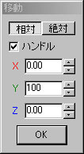

基本操作
基礎的な操作コマンドの説明
|
それでは次に、今回の実習に必要な基本操作の説明をします。 今回使用するコマンドは「基本図形の生成」「選択」「移動」「拡大」「回転」「材質」です。 |
基本図形プリミティブオブジェクトを作成します。プリセットされている「平面」「直方体」「球」「角柱」「ドーナツ型」 「筒」「角錐」「角の丸い直方体」「角の丸い角柱」は、それぞれ「詳細設定」のオプションで面の数などを設定 することができます。 |
|
選択 オブジェクトの面・頂点・辺を選択・非選択します。選択した部分は水色で表示され、 非選択部分は紫で表示されます。 ■通常 ■接続面 ■ベルト ■現物指定 |
移動選択した面・頂点・辺を移動させます。「相対」は現在の座標位置からの距離、「絶対」は 原点からの距離を表していて、それぞれ数値入力で移動させることができます。 |
 |
拡大選択した面・辺を拡大縮小させます。 |
|
回転選択した面・辺を回転します。 |
|
材質面にカレント材質を適用します。左クリックで操作できるため、任意の面だけの色を変更したいときなどに 便利です。設定するためには事前に「材質パネル」に「材質」を作成する必要があります。 |